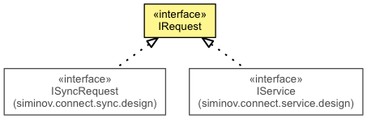

JavaScript is disabled on your browser.
Overview
Package
Class
Tree
Deprecated
Index
Help
Produced by Siminov Software Solution LLP
Prev Class
Next Class
Frames
No Frames
All Classes
Summary:
Nested |
Field |
Constr |
Method
Detail:
Field |
Constr |
Method
siminov.connect
Interface IRequest

All Known Subinterfaces:
IService
,
ISyncRequest
All Known Implementing Classes:
Service
,
SyncRequest
public interface
IRequest
It provides blue print for classes which wants to contain request information
Overview
Package
Class
Tree
Deprecated
Index
Help
Apache License 2.0
Prev Class
Next Class
Frames
No Frames
All Classes
Summary:
Nested |
Field |
Constr |
Method
Detail:
Field |
Constr |
Method
Copyright 2014-2016